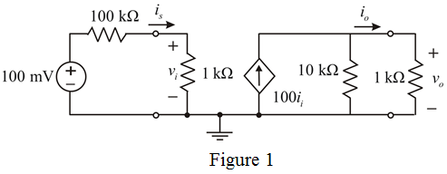

Draw the circuit diagram of current amplifier.

Calculate the current gain in the circuit.
Therefore, the current gain is.
Convert current gain into decibels.
Therefore, the current gain in decibels is .
Calculate the voltage gain.
Therefore, the voltage gain is .
Convert into decibels
Therefore, the voltage gain in decibels is.
Calculate the power gain in the circuit.
Therefore, the power gain is .
Convert into decibels
Therefore, the power gain in decibels is .